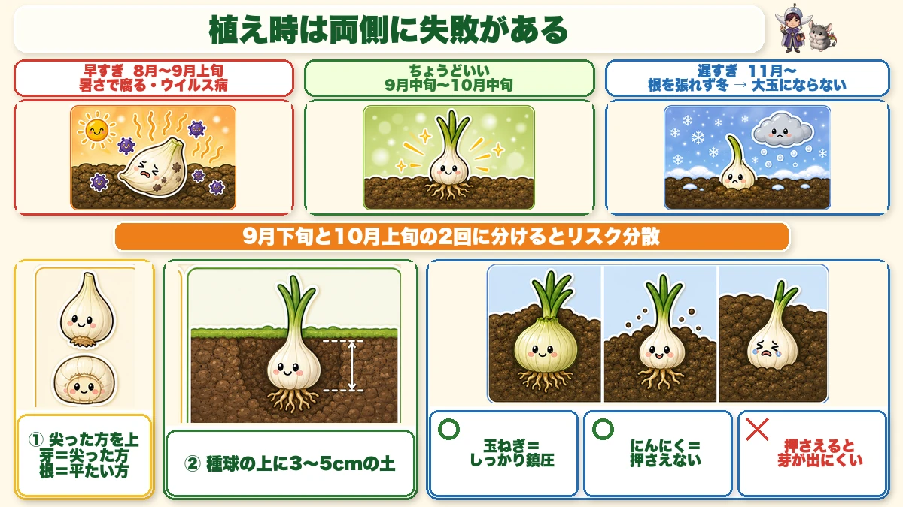
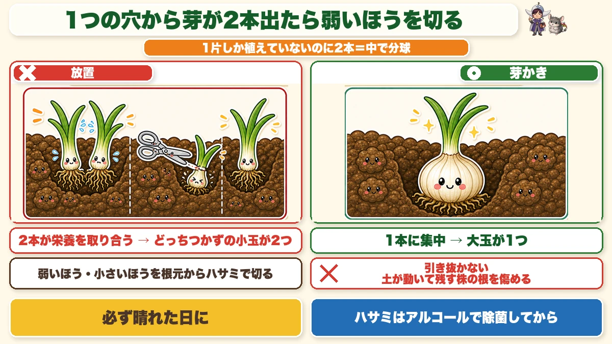
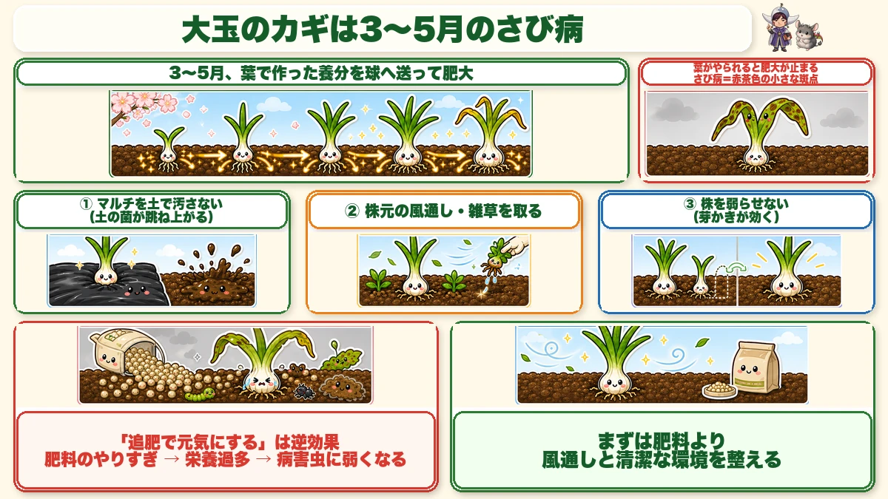
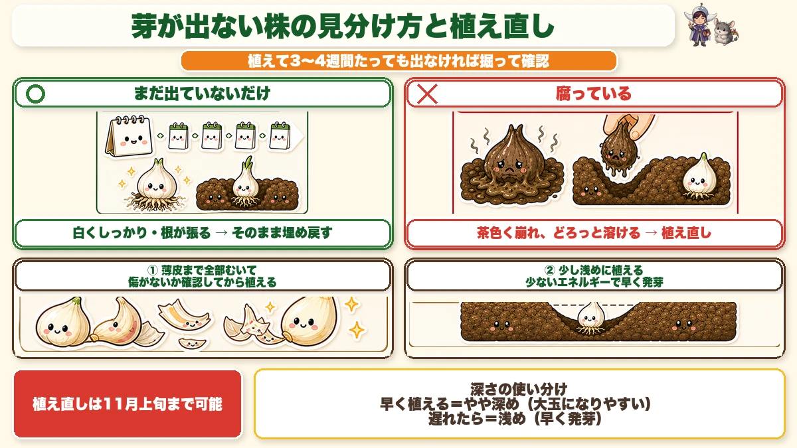
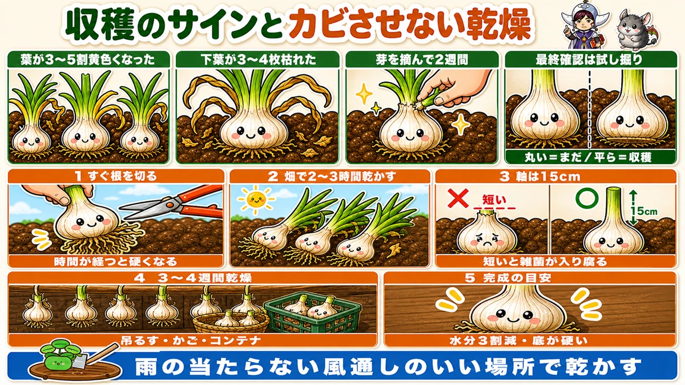

【保存版】にんにくは「芽かき」で大玉になる🧄 見過ごされている作業
🗨️「にんにく、植えっぱなしでいいって聞いたのに小さかった」
🗨️「芽が出ないまま、いつまでも土のまま」
🗨️「収穫はできたけど、保存してたらカビた」
どうも、8150（えいこう）です🌱 家庭菜園歴8年、理科の教員免許を持っていて、有機・無農薬で野菜を育てています。
前回は玉ねぎの話をしました。今回はその仲間、にんにくです。
にんにくは「植えたらほぼ放置でいい」と言われます。実際そのとおりで、手はほとんどかかりません。9月〜10月に植えて、翌年の5月〜6月に収穫。冬の間はほったらかしです。
ただ、それでも小さいにんにくで終わる人がいます。原因はだいたいこれです。
芽かきという作業を、知らないまま通り過ぎている。
1片しか植えていないのに、1つの穴から芽が2本、3本出ることがあるんです。そのままにしておくと、栄養の取り合いになって、どっちつかずの小玉になります。
私も最初の何年かは、この作業の存在すら知りませんでした。今日はそこを中心にお話しします。
※以下の時期は中間地（関東〜関西の平野部）が目安。寒い地域は少し遅らせ、暖かい地域は早めに。種球の袋の表示もあわせて確認してください。
📖 この記事の目次
栽培データ
- 科：ヒガンバナ科（仲間＝玉ねぎ・らっきょう・ネギ。同じ場所は1〜2年あける）
- タネまき：なし＝種球（しゅきゅう／植える用のにんにく）を植える
- 植え付け：9月中旬〜10月中旬
- 株間：15cm（穴あきマルチの穴に1片ずつ）
- 収穫：翌年の5月中旬〜6月
植え時は、両側に失敗があります

まず時期の話から。9月中旬〜10月中旬が目安です。
この「幅」がけっこう大事で、早すぎても遅すぎてもダメなんですね。
早すぎると腐る
にんにくは寒さにはとても強いんですが、暑さには弱いです。
まだ暑い時期に植えると、土の中で種球が腐ります。ウイルス病が出ることもあります。
近年は9月に入っても30℃近い日が続くので、「暦どおり9月中旬」と決めうちせず、朝晩が落ち着いてきたかを見てから植えるほうが安全です。
遅すぎると大玉にならない
逆に遅れると、根をあまり張らないまま冬を迎えます。
にんにくは冬の間に根を張って、春に一気に太ります。その土台づくりが足りないと、大きくなりきれません。
私は2回に分けて植えます
この「早すぎても遅すぎてもダメ」への対策として、私は9月下旬と10月上旬の2回に分けて植えています。
その年が暑ければ後半のほうが上手くいくし、早く冷えれば前半が当たる。どちらかが外れても、全滅は避けられます。
畑の面積に余裕があるなら、これはおすすめです。
植え方は3つだけ守れば大丈夫
①尖った方を上にして、垂直に
にんにくの1片には、尖っているほうと平たいほうがあります。尖ったほうが芽、平たいほうが根です。
これを逆さに植えると、芽が土の中で回り道をすることになります。まっすぐ立てて植えてください。
②種球の上に3〜5cmの土
深さの目安です。深すぎず、浅すぎず。
ちなみに深さには意味があって、深めに植えると大きい球になりやすく、浅めに植えると早く芽が出ます。標準は3〜5cmで大丈夫です。
③★覆土のとき、押さえつけない
ここ、玉ねぎと真逆なので注意してください。
玉ねぎは植えたあと株元をしっかり鎮圧します（押さえて土を締める）。でもにんにくは、土をかけたら押さえつけないでください。
土が締まると、芽が出にくくなります。ふわっと土をかけて終わり。それでいいんです。
同じヒガンバナ科でも、玉ねぎは「苗」で根がすでにある、にんにくは「これから芽を出す球根」。スタート地点が違うんですね。
マルチは張ったほうがいいです
雑草対策と生育もありますが、いちばんの理由は乾燥です。
にんにくは冬に土が乾くのを嫌います。ポリマルチを張っておくと、乾燥をかなり防げます。
サイズは幅95cm、株間・条間ともに15cmの5条マルチ。じつはこれ、玉ねぎと同じものが使えます。両方作る方は使い回せるので覚えておいてください。
水やりは基本不要です。雨が降らず土が乾いているとき、または少しでも早く芽を出させたいときだけで大丈夫です。
★芽かき ー 今日いちばん伝えたいこと

さて本題です。
12月ごろ、芽が出そろってきたら、うねを1株ずつ見てください。
1つの穴から、芽が2本出ている株がありませんか。
1片しか植えていないので、本来なら1本しか出ないはずです。2本出ているということは、その1片が中で分球しているということなんですね。
放置すると、両方とも中途半端になります
大根や葉物の間引きと同じ理屈です。
2本が同じ場所で栄養を取り合うので、どちらも大きくなりきれません。結果、どっちつかずの小さい玉が2つできます。
私、正直これを何年か見過ごしていました。「なんか2本出てるな」と思いながら、そのままにしていたんです。知ってからは毎年やっています。
やり方
- 弱いほう、小さいほうを選ぶ
- 根元からハサミで切る
引き抜かないでください。抜くと土が動いて、残すほうの根を傷めます。ここは大根の間引きと同じ考え方です。
3本出ていることもあります。その場合はいちばん大きい1本を残して、あとは切ります。
★2つだけ、守ってほしいこと
これが地味に大事です。
- 必ず晴れた日にやる
- ハサミはアルコールで除菌してから使う
にんにくは、思っている以上に病気にかかりやすい野菜です。切り口から菌が入ります。
雨の日や湿った日にやると、切り口が乾かないまま菌にさらされます。ハサミを使い回すのも同じで、前に切った株の菌を運んでしまう。
除菌したハサミで、晴れた日に。これだけで結果がだいぶ変わります。
大玉にするカギは「さび病」でした

にんにくを大きくするポイントは、じつは肥料ではありません。
3月〜5月に出る「さび病」を、いかに食い止めるかです。
さび病は、葉に赤茶色の小さな斑点が出る病気です。名前のとおり、鉄がさびたような色。
なぜ、そこまで重要なのか
にんにくが太るのは、春です。3月〜5月にかけて、葉で作った養分を球に送り込んでぐんぐん肥大します。
その大事な時期に葉がさび病でやられると、養分を作る工場が止まるわけです。
逆に言えば、収穫直前までさび病を抑えられれば、その間ずっと肥大が続きます。だから大玉になる。
予防でやること
無農薬でやるなら、予防がすべてです。
- マルチの上を土で汚さない…土の中の菌が跳ね上がって葉につくのを防ぎます。マルチの表面はきれいに保ってください
- 株元の風通しを良くする…雑草を放置しない。マルチの穴から出てくる草も、こまめに取ります
- ★株を弱らせない…ここで芽かきが効いてきます
3つ目が意外と見落とされます。分球したまま栄養を取り合っている株は、それだけで消耗しています。消耗した株は病気に弱い。
つまり芽かきは、玉を大きくするだけでなく、病気に強い株を作る作業でもあるんですね。
★追肥で元気にする、は逆効果です
ここ、勘違いしやすいところです。
「株が弱っているなら肥料をあげよう」——これ、にんにくでは逆に出ます。
肥料をやりすぎると栄養過多になって、病害虫にとても弱くなります。人間が食べ過ぎて体調を崩すのと似ています。
まずは環境を整えること。風通し、マルチの清潔さ、芽かき。この順番です。
11月にやってはいけないこと3つ
植えたあとの秋は、「何もしない」が正解です。むしろやってしまいがちなことを3つ挙げておきます。
①水やり
乾いているように見えても、水はやらないでください。
にんにくに水をやりすぎると、病気の原因になります。とくにべと病（葉が黄色っぽく変色する病気）が出やすくなります。
②追肥
まだ早いです。
にんにくはこれから休眠期に入ります。「芽が大きくならないな」と思って肥料をあげたくなりますが、この時期は大きくならなくて正常です。
③芽が出ない株を、放置する
これだけは動いてください。
植えて3〜4週間経っても芽が出ない株があったら、掘って確認します。
芽が出ないときの見分け方

掘ってみると、だいたい2つのどちらかです。
◯ まだ出ていないだけ
種球がしっかりしていて、根が張っている。この場合は大丈夫です。
そのまま埋め戻してください。もうすぐ出てきます。1か月くらいは待ってあげましょう。
✕ 腐っている
種球が溶けていたり、どろっとしていたり。この場合は回復しません。植え直しです。
植え直しは11月上旬まで
まだ間に合います。ただしコツが2つあります。
★薄皮まで全部むいてから植える
普段はむかなくていいのですが、植え直しのときはむいてください。理由は、傷や腐りがないかを目で確認できるからです。せっかく植え直すのに、また腐る種球を選んでは意味がありません。
食用のにんにくで代用してもかまいません。その場合も、皮をむいて中を確認してから植えます。
★少し浅めに植える
通常は3〜5cmですが、植え直しのときは浅めに。
浅いほうが、芽が地上に出るまでのエネルギーが少なくて済みます。つまり早く芽が出る。遅れを取り戻すための工夫です。
深さの使い分けをまとめると、こうなります。
- 早い時期に植える → やや深め（大きい球になりやすい）
- 遅れて早く発芽させたい → 浅め
収穫と、カビさせない乾燥

翌年の5月中旬〜6月。ようやく収穫です。
収穫のサイン
3つあります。
- 葉の色が3割〜5割くらい黄色くなった
- 下葉が3〜4枚枯れた
- にんにくの芽（花芽）を摘んでから2週間ほど経った
そして最終確認は、試し掘りです。
1株だけ抜いてみて、玉のお尻の部分が平らになっていたら収穫していいサインです。まだ丸みが残っていたら、もう少し置きます。
なお、病気が出始めたときは、時期を待たずに早めに収穫してください。粘っても悪くなる一方です。これは玉ねぎも同じです。
収穫する日は、晴れが続いて土が乾いているときを選びます。
★乾燥の手順（ここでカビが決まります）
穫ったあとが本番です。せっかく育てたのに保存中にカビた、というのが本当にもったいない。
- ①収穫したらすぐ、ハサミで根を切る…時間が経つと根が硬くなって、切るのが大変になります。穫ってすぐならスッと切れます
- ②畑でそのまま2〜3時間乾かす
- ③軸の長さを15cmほどに切る…★最初から短く切らないでください。切り口から雑菌が入って腐ります。15cmは、そのための余裕なんですね
- ④さらに3〜4週間、よく乾かす…麻ひもで縛って吊るすか、かごやコンテナに入れます。場所は、雨の当たらない風通しのいいところ
- ⑤完成の見きわめ…水分が3割ほど抜けて、玉の底の部分が硬くなったらOK
仕上げは、軸を短く切って、薄皮をむいてきれいにしてから、ネットに入れて保存します。
ここまでやると、翌年の春先まで持ちます。そして残しておいた玉が、来シーズンの種球になります。
学ぶ：にんにくの1片は「葉」だった🔬
理科の時間です。
にんにくを1片むいてみてください。中から出てくるのは、白い実のようなかたまりですよね。
あれ、実ではありません。葉です。
前回、玉ねぎの玉が「養分をためて太った葉の根元」だという話をしました。にんにくもまったく同じ仲間なので、構造が一緒なんです。
にんにくを横に切ってみると分かりやすいのですが、いくつかの片が、中心にある短い茎のまわりに並んでいます。この茎から、下向きに根が出ている。
- 中心の短い茎…本当の茎
- そのまわりの片…養分をためた葉
- 伸びている緑の部分…葉
だから、1片を植えると1株になるんですね。あの片には、次の株を立ち上げるだけの養分が全部詰まっています。栄養の入ったお弁当を持って旅立つようなものです。
そして面白いのが、にんにくは種で増えないということ。
普通、野菜は花を咲かせて種をつくります。でも畑で育てているにんにくは、花を咲かせても種ができにくい。だから毎年、自分の体の一部（1片）を分けて増えていきます。
つまり畑のにんにくは、全部クローンなんですね。何年も同じ株を受け継いでいくと、その畑に合った性質が引き継がれていきます。
お子さんと一緒なら、にんにくを横に切って中心の茎を探してみてください。「これが茎で、まわりは全部葉っぱなんだよ」と言うと、たいてい驚かれます。玉ねぎも同じように切って見比べると、仲間なのがよく分かりますよ☺️
まとめ
ここまで読んでくださって、ありがとうございます！
にんにくは手がかからない野菜です。でも、押さえどころを外すと小玉で終わります。
- 植え時は9月中旬〜10月中旬。早すぎると腐り、遅すぎると大玉にならない
- 尖った方を上に、種球の上に3〜5cmの土。★覆土は押さえつけない（玉ねぎとは逆）
- ★芽が2本出ていたら、弱いほうを根元からハサミで切る。晴れた日に、除菌したハサミで
- 大玉のカギは3〜5月のさび病を抑えること。マルチをきれいに・風通しよく・株を弱らせない
- 秋は水やりも追肥もしない。芽が出ない株だけ掘って確認（植え直しは11月上旬まで）
- 収穫後は根をすぐ切り、軸は15cmで切って3〜4週間乾かす。短く切ると雑菌が入る
まずは今年、うねを見に行くときに「芽が2本出ていないか」だけ気にしてみてください。1本切るだけで、来年のにんにくがひとまわり大きくなりますよ🧄
次回は、寒くなってからの畑仕事。冬にやっておくと春がラクになる作業をお話しします🌱
にんにく種球（ホワイト六片）
食用のにんにくではなく、植えるための種球です。ホワイト六片は寒さに強く、粒が大きくなる定番。記事で書いた「お尻・傷・大きさ」のチェックをして、いいものから植えてください。
![[商品価格に関しましては、リンクが作成された時点と現時点で情報が変更されている場合がございます。]](https://hbb.afl.rakuten.co.jp/hgb/565b74ce.f30a48e7.565b74cf.8a827250/?me_id=1368676&item_id=10000301&pc=https%3A%2F%2Fthumbnail.image.rakuten.co.jp%2F%400_mall%2Farakawaseed%2Fcabinet%2Fcompass1659994587.jpg%3F_ex%3D240x240&s=240x240&t=picttext "[商品価格に関しましては、リンクが作成された時点と現時点で情報が変更されている場合がございます。]")

穴あき黒マルチ（15cm間隔）
にんにくも株間15cm。玉ねぎと同じマルチが使えます。にんにくは春の草取りがしんどいので、マルチを張っておくと冬から春がまるごとラクになります。
![[商品価格に関しましては、リンクが作成された時点と現時点で情報が変更されている場合がございます。]](https://hbb.afl.rakuten.co.jp/hgb/55521906.a3595d78.55521907.92994d18/?me_id=1225177&item_id=10035007&pc=https%3A%2F%2Fthumbnail.image.rakuten.co.jp%2F%400_mall%2Fssn%2Fcabinet%2F02584092%2F07223762%2F4980356008386_1.jpg%3F_ex%3D240x240&s=240x240&t=picttext "[商品価格に関しましては、リンクが作成された時点と現時点で情報が変更されている場合がございます。]")
麻ひも
収穫後、軸を15cmで切って吊るすときに使います。ビニールひもより麻のほうが湿気を吸ってくれるので、乾燥中にカビが出にくいです。
![[商品価格に関しましては、リンクが作成された時点と現時点で情報が変更されている場合がございます。]](https://hbb.afl.rakuten.co.jp/hgb/56bc2b48.a5f55627.56bc2b49.c4ff0d7c/?me_id=1372205&item_id=10005292&pc=https%3A%2F%2Fthumbnail.image.rakuten.co.jp%2F%400_mall%2Faudiofuntech%2Fcabinet%2Fproducts%2Fetc%2Fetc06%2F7052-1.jpg%3F_ex%3D240x240&s=240x240&t=picttext "[商品価格に関しましては、リンクが作成された時点と現時点で情報が変更されている場合がございます。]")
あわせて読みたい